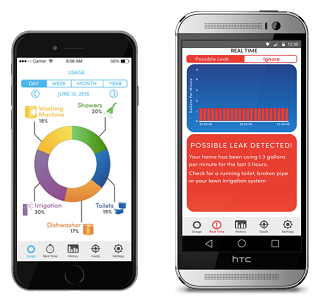

Projetos
Nossos Projetos
Inspire-se, conheça, participe!
Projetos em Andamento

Desenvolvimento de sistema para identificação de perfis de consumo de água intradomiciliar
Identificação, melhoria e otimização de sistemas ou processos ambientais
 Otimização do processo de remoção de nitrogênio e carga orgânica com base no Anaerobic Digestion Model 1 (ADM1)
Otimização do processo de remoção de nitrogênio e carga orgânica com base no Anaerobic Digestion Model 1 (ADM1)
Identificação, melhoria e otimização de sistemas ou processos ambientais
Análise de confiabilidade do sistema de distribuição de água e esgoto de Salvador
Identificação, melhoria e otimização de sistemas ou processos ambientais
Projetos Finalizados
 Controle estatístico CUSUM e EWMA para avaliação de pequenas mudanças
Controle estatístico CUSUM e EWMA para avaliação de pequenas mudanças
Controle Estatístico Multivariado aplicado à Indústria Petroquímica
Controle multivariado para avaliação de pequenas mudanças
Controle Estatístico Multivariado aplicado à Indústria Petroquímica
Análise comparativa da demanda de água entre bairros de Salvador
Avaliação de padrões do consumo de água residencial de Salvador
Análise de padrões de consumo de água residencial
Avaliação de padrões do consumo de água residencial de Salvador
Avaliação de perdas de produção em uma planta industrial
Mineração de dados para melhoria de processos
Tratamento estatístico das análises laboratoriais, especificação do produto final identificando grupos de ocorrências indesejadas
Mineração de dados para melhoria de processos
Avaliação de padrões em sistema de tratamento de água produzida de petróleo
Mineração de dados para melhoria de processos
Critérios para avaliação de desempenho de modelos de classificação
Mineração de dados para melhoria de processos